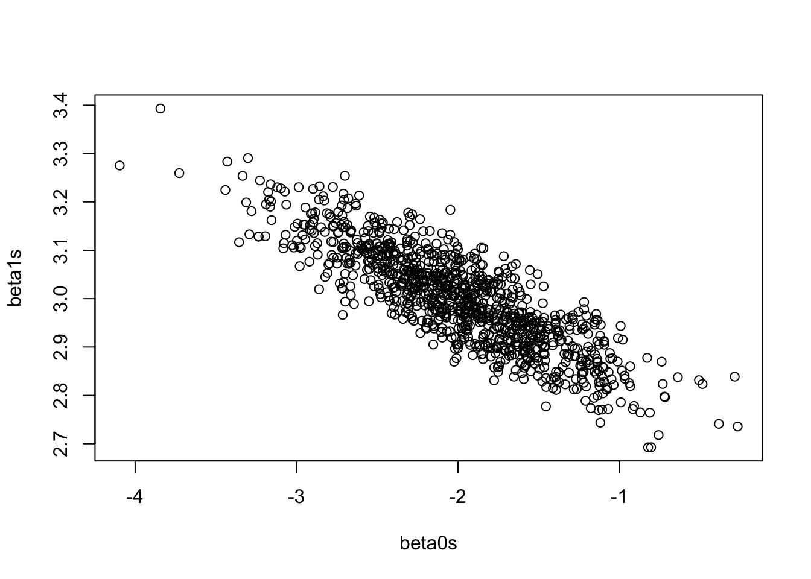
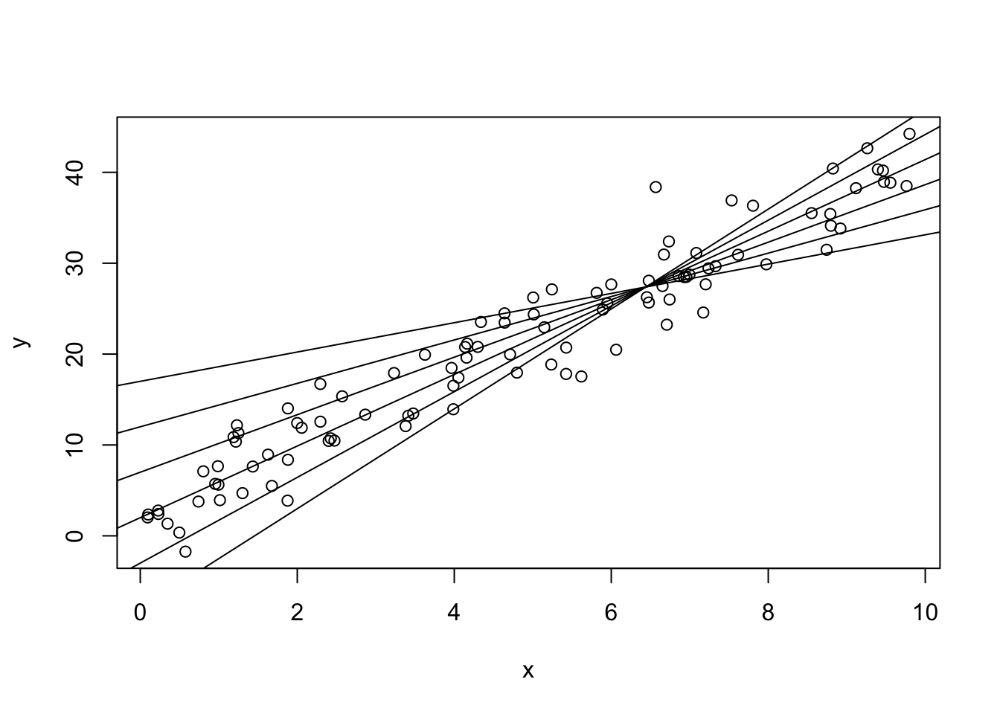

data(mtcars)
y <- mtcars$mpg
X <- cbind(1, mtcars$wt)
# (X^TX)^-1
XTX1 <- solve(t(X) %*% X) 4 Regression in Matrix Form
For the most part, this chapter is a couple of identities and a lot of exercises!!!
4.1 Putting Things in Boxes
Matrix Forms of Things We’ve Seen
Using \[ Y = \begin{bmatrix}Y_1\\ Y_2\\ \vdots\\ Y_n\end{bmatrix};\quad \underline y = \begin{bmatrix}y_1\\ y_2\\ \vdots\\ y_n\end{bmatrix};\quad X = \begin{bmatrix}1 & x_1\\1 &x_2\\ \vdots & \vdots\\ 1 & x_n\end{bmatrix};\quad \underline\beta = \begin{bmatrix}\beta_0\\\beta_1\end{bmatrix};\quad\underline\epsilon = \begin{bmatrix}\epsilon_1\\ \epsilon_2\\ \vdots\\ \epsilon_n\end{bmatrix} \]
\(Y = X\underline\beta + \underline\epsilon\) is the same as \[\begin{align*} Y_1 &= \beta_0 + \beta_1x_1 + \epsilon_1\\ Y_2 &= \beta_0 + \beta_1x_2 + \epsilon_2\\ &\vdots\\ Y_n &= \beta_0 + \beta_1x_n + \epsilon_n\\ \end{align*}\]
Some Fun Matrix Forms
\[\begin{align*} \underline\epsilon^T\underline\epsilon &= \epsilon_1^2 + \epsilon_2^2 + ... + \epsilon_n^2 = \sum_{i=1}^n\epsilon_i^2\\ Y^TY &= \sum Y_i^2\\ \mathbf{1}^T\underline y &= \sum y_i = n\bar y\\ X^TX &= \begin{bmatrix}n & \sum x_i\\ \sum x_i & \sum x_i^2\end{bmatrix}\;\text{ (show this)}\\ (X^TX)^{-1} &= \frac{1}{nS_{XX}}\begin{bmatrix}\sum x_i^2 & -n\bar x\\-n \bar x & n\end{bmatrix}\text{ (show this)}\\ X^TY &= \begin{bmatrix}\sum Y_i\\ \sum x_iY_i\end{bmatrix} \end{align*}\]
The “Normal” Equations
Copied from previous slide: \[\begin{align*} X^TX &= \begin{bmatrix}n & \sum x_i\\ \sum x_i & \sum x_i^2\end{bmatrix}\\ X^T\underline y &= \begin{bmatrix}\sum y_i\\ \sum x_iy_i\end{bmatrix} \end{align*}\]
The textbook included the following equations in Ch02. The estimates \(\hat\beta_0\) and \(\hat\beta_1\) in OLS (same as MLE) are the solution to:
\[\begin{align*} n\hat\beta_0 + \hat\beta_1\sum x_i &= \sum y_i\\ \hat\beta_0\sum x_i + \hat\beta_1\sum x_i^2 &= \sum x_iy_i\\ \end{align*}\]
Putting these together: \[ X^TX\hat{\underline\beta} = X^T\underline y\quad \Leftrightarrow\quad \hat{\underline\beta} = (X^TX)^{-1}X^T\underline y \] Try this out using the definition of \((X^TX)^{-1}\) on the previous slide.
Variance of a Vector: the Variance-Covariance Matrix
In general, for vector-valued random variable \(Z = (Z_1, Z_2, \dots, Z_n)\), \[ V(Z) = \begin{bmatrix} V(Z_1) & cov(Z_1, Z_2) & \cdots & cov(Z_1, Z_n) \\ cov(Z_2, Z_1) & V(Z_2) & \cdots & cov(Z_2, Z_n)\\ \vdots & \vdots & \ddots & \vdots\\ cov(Z_n, Z_1) & cov(Z_n, Z_2) & \cdots & V(Z_n) \end{bmatrix} \]
\(V(\hat{\underline\beta})\)
Let’s start with the covariance of \(\hat\beta_0\) and \(\hat\beta_1\): \[\begin{align*} cov(\hat\beta_0, \hat\beta_1) &= cov(\bar y - \hat\beta_1\bar x, \hat\beta_1)\\ &= -\bar x cov(\hat\beta_1, \hat\beta_1)\\ &= -\bar x V(\hat\beta_1)\\ &= \frac{-\sigma^2\bar x}{S_{XX}} \end{align*}\]
The var-covar matrix is: \[\begin{align*} V(\hat{\underline\beta}) &= \begin{bmatrix} V(\hat\beta_0) & cov(\hat\beta_0, \hat\beta_1)\\ cov(\hat\beta_0, \hat\beta_1) & V(\hat\beta_1) \end{bmatrix}\\ &= \begin{bmatrix} \frac{\sigma^2\sum x_i^2}{S_{XX}} & \frac{-\sigma^2\bar x}{S_{XX}}\\ \frac{-\sigma^2\bar x}{nS_{XX}} & \frac{\sigma^2}{S_{XX}} \end{bmatrix}\\ &= \frac{\sigma^2}{nS_{XX}}\begin{bmatrix} \sum x_i^2 & -n\bar x\\ -n\bar x & n \end{bmatrix}\\ &= (X^TX)^{-1}\sigma^2 \end{align*}\]
Variance of \(\hat Y_0\)
Let \(X_0 = [1, x_0]\) be an arbitrary observation. Then the predicted value of the line at \(X_0\), labelled \(\hat Y_0\), is: \[\begin{align*} V(\hat Y_0) &= V(X_0\hat{\underline\beta})\\ &= X_0V(\hat{\underline\beta})X_0^T\\ &= \sigma^2X_0(X^TX)^{-1}X_0 \end{align*}\]
HWK: Verify that \(X_0(X^TX)^{-1}X_0\) is a \(1\times 1\) matrix.
Variance of \(\hat Y_{n+1}\)
For a new observation, we have the variance of the line plus a new unobserved error \(\epsilon_{n+1}\). \[\begin{align*} V(\hat Y_{n+1}) &= V(X_{n+1}\hat{\underline\beta} + \epsilon_{n+1})\\ &= X_{n+1}V(\hat{\underline\beta})X_{n+1}^T + V(\epsilon_{n+1})\\ &= \sigma^2X_{n+1}(X^TX)^{-1}X_{n+1}^T + \sigma^2\\ &= \sigma^2\left(X_{n+1}(X^TX)^{-1}X_{n+1}^T + 1\right) \end{align*}\]
HWK: Verify (empirically or mathematically) that this is smallest when \(x_0 = \bar x\).
CI for \(Y_i\) (observed or new)
Assuming \(X\) is fixed, \[ \hat Y_i = X_{i,\cdot}\hat{\underline\beta} \] follows a normal distribution.
Therefore, \[ \frac{\hat Y_i - Y_i}{se(\hat Y_i)}\sim t_{n - 2} \] and a confidence interval can be found as \[ \hat Y_i \pm t_{n-2}(\alpha/2)se(\hat Y_i) \]
(Corrected) ANOVA in Matrix Form
On tests, you will be given these formulas if they are relevant!
| Source | \(df\) | \(SS\) | \(MS\) |
|---|---|---|---|
| Regression (corrected) | \(p - 1\) | \(\hat{\underline\beta}^TX^T\underline y - n\bar{\underline y}^2\) | \(SS/df\) |
| Error | \(n-p\) | \(\underline y^t\underline y- \hat{\underline\beta}^TX^T\underline y\) | \(SS/df\) |
| Total (corrected) | \(n - 1\) | \(\underline y^t\underline y - n\bar{\underline y}^2\) | \(SS/df\) |
- The “corrected” ANOVA is the ANOVA table for comparing the errors due to \(\hat\beta_1\) to the errors due to \(\hat\beta_0\).
- This is different from comparing a model with \(\hat\beta_0\) and \(\hat\beta_1\) to a model with neither parameter.
- The value of the “correction” is based on \(\bar y\). If the slope is 0, then the estimate for \(\hat\beta_0\) is \(\bar y\).
Summary
When we have one predictor, it is clear that: \[\begin{align*} Y &= X\hat{\underline\beta} + \underline\epsilon\\ \hat{\underline\beta} &= (X^TX)^{-1}X^T\underline y\\ V(\hat{\underline\beta}) &= (X^TX)^{-1}\sigma^2\\ V(\hat Y_0) &= \sigma^2X_0(X^TX)^{-1}X_0^T\\ V(\hat Y_{n+1}) &= \sigma^2(X_{n+1}(X^TX)^{-1}X_{n+1}^T + 1)\\ \end{align*}\]
This will not change when we add predictors!
See the R Notes for some good examples! I’ll probably go over some of these in class.
4.2 Exercises
Suggested textbook exercises: A, B, D, F.
- Show that \(X^TX = \begin{bmatrix}n & \sum x_i\\ \sum x_i & \sum x_i^2\end{bmatrix}\). Hint: the first column of \(X\) is all 1s, and this is always important. Also find the inverse of this 2x2 matrix.
- Verify that \(X^TX\hat{\underline\beta} = X^T\underline y\) is solved by \(\hat{\underline\beta} = (X^TX)^{-1}X^T\underline y\) (i.e., plug \(\hat{\underline\beta}\) into the first equation and simplify).
- Show that \(V(\hat\beta_0) = \frac{\sigma^2\sum x_i^2}{S_{XX}}\) and \(V(\hat\beta_1) = \frac{\sigma^2}{S_{XX}}\). Hint: Show \(V(\hat\beta_1)\) first, then use the fact that \(\hat\beta_0 = \bar y - \hat\beta_1\bar x\).
- Verify that \(X_0(X^TX)^{-1}X_0\) is a scalar.
- Verify (empirically or mathematically) that \(V(\hat Y_{n + 1})\) is smallest when \(x_0 = \bar x\).
- Explain why \(V(\hat y_{n+1}) > V(\hat y)\). In other words, explain why there’s less variance when predicting values in our data rather than predicting values outside our data.
Solution
The values in our data set were used to fit the model, and thus we’ve already dealt with them as a source of variance. A new data point comes with a new source of variance, and this is accounted for in \(V(\hat y_{n+1})\).
Somewhat paradoxically, we get two different variances depending on whether we’re treating it as an observation or a new value!For the next few questions, we’ll use the mtcars data. In the following block of code, I will set up some of the matrices for you!
- Verify that \(\hat{\underline{\beta}} = (X^TX)^{-1}X^T\underline y\) is the same as the output from R.
- Verify via matrix multiplication in R that \(\hat{\underline{\beta}}\) is the solution to \(X^TX\underline{\hat\beta} = X^T\underline y\).
- using the matrix forms, verify that \(V(\hat\beta_0)\) and \(V(\hat\beta_1)\) (using \(s^2\) rather than \(\sigma^2\)) are what are found in the summary table of a linear model in R.
Solutions to questions 7-9
# 7.
coef(lm(mpg ~ wt, data = mtcars))(Intercept) wt
37.285126 -5.344472 XTX1 %*% t(X) %*% y [,1]
[1,] 37.285126
[2,] -5.344472# 8.
beta <- XTX1 %*% t(X) %*% y
all.equal(
t(X) %*% X %*% beta,
t(X) %*% y
)[1] TRUE# 9.
summary(lm(mpg ~ wt, data = mtcars))$coef[, "Std. Error"](Intercept) wt
1.877627 0.559101 sigma <- summary(lm(mpg ~ wt, data = mtcars))$sigma
Sxx <- sum((mtcars$wt - mean(mtcars$wt))^2)
n <- length(mtcars$mpg)
c(
sqrt(sigma^2 * sum(mtcars$wt^2) / (n * Sxx)),
sqrt(sigma^2 / (Sxx))
)[1] 1.877627 0.559101- Using simulation, verify that \(\hat\beta_0\) and \(\hat\beta_1\) are negatively correlated. Show a plot of \(\hat\beta_1\) versus \(\hat\beta_0\) from each of the simulated data sets.
Solution
n <- 100
x <- runif(n, 0, 10)
X <- cbind(1, x)
beta0s <- beta1s <- double(1000)
for (i in 1:1000) {
e <- rnorm(n, 0, 3) # sigma^2 = 9
y <- -2 + 3 * x + e
beta <- solve(t(X) %*% X) %*% t(X) %*% y
beta0s[i] <- beta[1]
beta1s[i] <- beta[2]
}
plot(beta0s, beta1s)
# This is slightly off because cov(b0s, b1s) is based on s, not sigma
cov(beta0s, beta1s)[1] -0.04772858-9 * mean(x) / sum((x - mean(x))^2)[1] -0.04864048- Is it possible to change the simulation above to get a positive correlation?
Solution
Yes! Make it so \(\bar x\) is negative. (It does not matter if the signs of \(\beta_0\) or \(\beta_1\) are positive or negative, it only matters if \(\bar x > 0\).)
- In the simple linear regression case, derive an estimate for \(\beta_1\) when \(\beta_0\) is a fixed value.
Solution
\[\begin{align*} R(\beta_1) &= \sum(y_i - \beta_0 - \beta_1x_i)^2\\ \implies \frac{dR(\beta_1)}{d\beta_1} &= -2\sum(y_ix_i - \beta_0x_i - \beta_1x_i^2)\stackrel{set}{=}0\\ \implies &= \sum y_ix_i - \beta_0\sum x_i - \hat\beta_1\sum x_i^2\\ \implies \hat\beta_1 &= \frac{\sum y_ix_i - \beta_0\sum x_i}{\sum x_i^2} \end{align*}\]- Use your answer to question 12 to demonstrate how increasing the intercept will always lead to a decrease in the slope whenever \(\bar x > 0\), thus explaining the negative correlation between \(\hat\beta_0\) and \(\hat\beta_1\). Repeat for \(\bar x < 0\).
Solution
n <- 100
x <- runif(n, 0, 10)
true_beta0 <- 2
true_beta1 <- 4
y <- true_beta0 + true_beta1 * x + rnorm(n, 0, 3)
plot(y ~ x)
for (beta0 in c(-8, -3, 2, 7, 12, 17)) {
b1hat <- (sum(x * y) - beta0 * sum(x)) / (sum(x^2))
abline(a = beta0, b = b1hat)
}
As \(\beta_0\) increases, \(\hat\beta_1\) is forced to have a smaller slope in order to still fit the data well. If \(\beta_0\) were 1000, the line would have to have a very large negative slope in order to even come close to the data!
Conversely, if \(\beta_0\) were very small, \(\hat\beta_1\) would need to be very large. They’re negatively correlated!
As a side note, all of the lines go through the same point. It isn’t \((\bar x, \bar y)\)! What is it? Hint: take any two lines and find the estimator of \(\beta_1\), then set them equal to each other. Do this with the values, then do this using \(\beta_0^{(1)}\) and \(\beta_0^{(2)}\).
- What happens to the correlation of \(\hat\beta_0\) and \(\hat\beta_1\) when \(\bar x = 0\)? Use your answers above to explain this intuitively